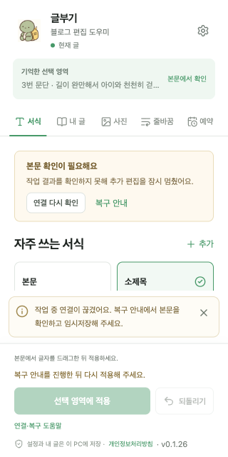
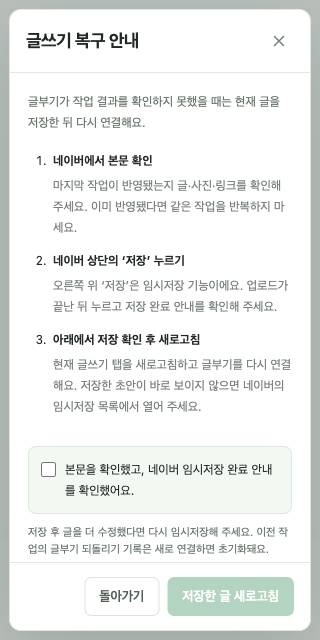
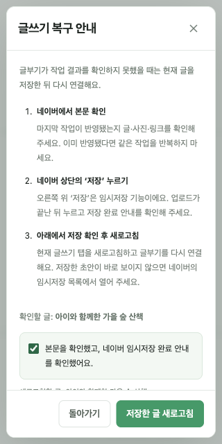

글부기
블로그 편집 도우미
2026.10.21 · 출시 전 사용성 재검수 · v0.1.26 / 어댑터 v40
주요 사용 흐름을 재검수하고 실패 복구 안내와 절차를 개선했습니다.‘본문을 확인한 뒤 다시 열어 주세요’만 보고 사용자가 복구 방법을 추측해야 했던 문제를 수정했습니다. 단순한 연결·선택 문제와 결과가 불확실한 작업을 구분하고, 필요한 단계와 실행 버튼을 패널에서 제공합니다.
자동 검사 560개 / 43개 파일 통과. 타입 검사·빌드·패키지 검사·스토어 자료 초안 검사도 통과했습니다. 설치본을 v0.1.26으로 갱신했고 기존 설정이 유지됨을 확인했습니다.
개선한 부분
| 발견한 문제 | 반영한 개선 |
|---|
| 실패 원인과 다음 행동이 모호하고, 알림이 사라지면 해결 절차를 찾기 어려움 | 복구 안내를 계속 표시하고 모든 기능의 하단에서 ‘연결·복구 도움말’을 열 수 있게 했습니다. 본문 확인 → 임시저장 → 저장 확인 후 새로고침 순서를 제공합니다. |
| 실패 직후 화면이 정상처럼 보이고, 응답을 못 받은 작업을 다시 누르면 중복 실행할 수 있음 | 실패 직후 편집기 상태를 다시 읽습니다. 결과가 불확실한 요청은 같은 편집 세션에서 추가 실행을 막습니다. 패널을 다시 열어도 유지하고, 새 편집 세션에 연결하면 해제합니다. |
| 링크 카드의 이미지가 늦게 나타나면 2초 만에 완료 확인 실패가 될 수 있음 | 삽입 이후 완료 확인 대기를 8초로 늘렸습니다. 4초 지연 상황에서 한 번만 삽입하고 정상 완료하는 자동 검사를 추가했습니다. 무한 대기나 자동 재삽입은 하지 않습니다. |
| 짧은 화면에서 오류 안내가 길어지면 하단 버튼이 밀릴 수 있음 | 복구 안내를 내용 스크롤 영역에 배치하고 하단 도움말을 계속 접근할 수 있게 했습니다. 320×640, 360×500, 400×880에서 버튼 가림·잘림이 없음을 확인했습니다. |
| 읽기 전용 페이지도 연결 표시가 ‘현재 글’로 보일 수 있음 | 실제로 편집 가능한 상태인지 기준으로 연결 표시를 구분합니다. 연결이 끊긴 경우에는 ‘연결 다시 확인’을 제공합니다. |
| 사진이 없는 화면에서 어디에서 사진을 추가해야 하는지 불명확함 | 패널의 ‘새 사진’ 버튼을 직접 안내하도록 바꿨습니다. 기능 탭의 선택 상태도 접근성 속성으로 제공합니다. |
| 실제 네이버의 버튼은 ‘저장’인데 복구 안내는 ‘임시저장’만 언급함 | 실제 네이버 화면을 확인해 ‘네이버 상단의 저장 누르기’로 안내하고, 이 버튼이 임시저장 기능임을 설명했습니다. |
실패했을 때의 새 흐름
일시 연결 문제: 네이버 PC 글쓰기 탭을 선택하고 ‘연결 다시 확인’을 누릅니다. 단순 선택 오류는 본문 위치를 다시 선택해 계속 작업합니다.
결과가 불확실한 작업: 복구 안내 → 네이버 본문 확인 → 상단 ‘저장’ → 저장 완료 확인 체크 → ‘저장한 글 새로고침’ → 다시 연결 후 적용 위치 선택
임시저장 자체는 네이버에서 사용자가 직접 완료해야 합니다. 글부기가 임시저장 성공을 자동 판정하거나 저장·발행 버튼을 대신 누르지는 않습니다. 결과가 이미 반영됐다면 같은 삽입을 반복하지 않도록 안내합니다. 새로고침 후 저장한 초안이 바로 보이지 않으면 네이버 임시저장 목록에서 다시 여는 단계도 포함했습니다.
편집기 응답을 확인할 수 있는 경우 저장 확인 후 본문·세션·문서가 바뀌면 새로고침을 거절합니다. 다른 탭 선택, 페이지 이동, 진행 중인 사진 업로드도 확인하며 저장 확인은 5분 후 만료됩니다. 새 연결에서는 글부기의 직전 작업 되돌리기 기록이 초기화됩니다.
수정 화면

모의 오류 화면 · 지속되는 복구 안내와 하단 도움말
설치본 실제 화면 · 저장 확인 전 새로고침 비활성화
모의 복구 흐름 · 확인 후 새로고침 활성화검수 범위와 결과
| 흐름 | 검수 방법 | 결과 |
|---|
| 서식·인용구 적용 및 되돌리기 | 예시 문서 브라우저 + 자동 회귀 검사 | 통과 |
| 내 글 첫 설정·저장 글 검색·카드 삽입·되돌리기 | 예시 문서 브라우저 | 통과 |
| 실제 공개 블로그 검색 | 설치본에서 읽기 전용 검색, 313개 중 10개 표시 | 통과 |
| 사진 이동·AI 설정 및 되돌리기 | 예시 문서 브라우저 + 네이버 UI 모의 자동 검사 | 통과 |
| 새 사진 업로드와 파일 제한 | 자동 회귀 검사, 실제 네이버 파일 전송은 미실행 | 통과 |
| 의미 중심 줄바꿈 미리보기·적용·되돌리기 | 예시 문서에서 공백을 제외한 변경 전후 문구 일치 확인 + 자동 검사 | 통과 |
| 예약 날짜·시간 적용 | 예시 문서 브라우저 + 자동 검사, 실제 발행 미실행 | 통과 |
| 백업 내보내기·미리보기·가져오기와 잘못된 파일 거절 | 예시 설정 브라우저 + 자동 검사 | 통과 |
| 일시 연결 문제의 재확인 | 모의 편집기, 새로고침 0회로 복구 | 통과 |
| 불확실한 작업 결과의 복구 절차 | 모의 편집기에서 저장 확인→새 세션 연결, 실제 빈 네이버 탭에서 API 확인 | 통과 |
| 프리셋 편집·선택 보호·사진 보존·검색 오류 | 자동 회귀 검사 | 통과 |
실제 네이버에서 확인한 내용새로 연 빈 글쓰기 탭에 v40이 연결되는 것을 확인했습니다. 복구 준비 성공, 저장 확인이 없는 요청 차단, 실제 새로고침 요청, 새 세션 재연결을 확인했습니다. 기존 설정의 전후 해시도 같았습니다. 설치본의 실제 공개 글 검색은 313개 중 10개 결과를 표시했습니다.
실제 네이버에서는 빈 문서를 사용해 연결·새로고침만 확인했습니다. 기존 초안을 변경하거나 새 테스트 원고를 저장·발행하지 않았습니다. 원고가 있는 상태의 임시저장 성공 및 실패 후 복구는 실제 네이버에 오류를 강제로 만들지 않고 모의 편집기와 자동 검사로 확인했습니다. 사진 업로드·예약 발행의 실제 외부 실행과 Chrome 116 최소 버전에서의 재현은 이번 검수에서 수행하지 않았습니다.
설치 자료와 공개 상태
글부기 v0.1.26 설치 ZIP · 최신 스토어 자료 묶음
이번 검수 브라우저의 설치본은 갱신했습니다. 다른 브라우저나 기존에 열어 둔 글쓰기 탭에서는 원고를 임시저장한 뒤 확장 관리에서 글부기와 글쓰기 탭을 새로고침해 주세요.
개인정보처리방침은 요청하신 비공개 상태로 유지했습니다. 스토어 심사 제출과 공개 출시는 보류 상태입니다.
검수 근거
자동 검사·빌드·패키지 검사 기록 · 스토어 자료 검사 · 기능 검수 목록 · 실제 빈 글 복구 API 확인 · 새 세션 연결 확인 · 모의 복구 전체 흐름 · 새로고침 없는 연결 재확인 · 짧은 화면 버튼 접근 검사
새로고침 API와 기존 권한 사용은 Chrome 공식 문서 및 설치본 동작으로 확인했습니다. 이번 변경으로 새 권한이나 외부 서비스를 추가하지 않았습니다.
설치 ZIP SHA-256
dcc8d844047fe08c0114795740a8352546af69522cbbe416e0aa894a03d10e7a